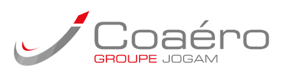
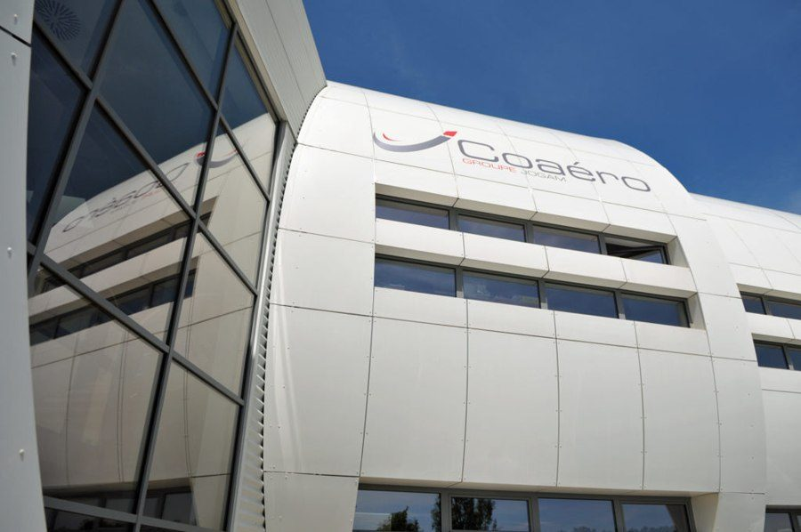

Mon expérience professionnelle
L'entreprise dans laquelle j'ai travaillé, et ce que j'y ai fait.

COSeptembre 2024 - Août 2027 · Alternance
Technicien méthodes et études
COAERO · Pierres (28)
Le bureau des méthodes fait le lien entre les plans envoyés par le client et l'atelier qui produit. Les pièces, c'est le client qui les dessine ; mon travail était de déterminer comment les fabriquer. Je définissais les étapes de fabrication, et je concevais les outillages : les montages sur mesure qui servent à mettre la tôle en forme, à la maintenir pendant la soudure, ou à vérifier que la pièce finie est conforme.
Outillages de fabrication
J'ai conçu sur CATIA V5 des outillages d'emboutissage - la mise en forme d'une tôle pressée entre un poinçon et une matrice -, des outillages de soudure, y compris pour le robot, et des outillages de positionnement pour la découpe laser 5 axes.
Outillages de contrôle
J'ai conçu des gabarits « go / no go » et des montages à piges : des pièces de référence qui, en un geste, disent si les trous sont au bon diamètre et au bon endroit.
Gammes de fabrication
J'ai rédigé les gammes de fabrication sur TopSolid'ERP : le mode d'emploi que suit l'atelier pour produire une pièce, avec l'ordre des opérations, les postes de travail, les outillages, les contrôles et les temps.
Panoplies de découpe laser
J'ai créé des panoplies de découpe laser : la disposition des pièces sur une même tôle, organisée pour gaspiller le moins de matière possible et réduire le temps de découpe.
Ordres de fabrication
J'ai mis à jour les ordres de fabrication (OF) - le dossier qui accompagne chaque lot en atelier - quand le process évoluait, et rédigé les gammes de retouche permettant de remettre en conformité une pièce rebutée.
Amélioration continue
J'ai mené des réindustrialisations : reprendre une pièce déjà en production pour revoir sa fabrication, et ainsi réduire les temps et le travail manuel.
Logiciels utilisés en entreprise
À propos de COAERO
Spécialiste de la tôlerie fine et de la chaudronnerie pour l'aéronautique civile et militaire, en petite et moyenne série. L'entreprise fabrique notamment des tôles pare-feu pour les nacelles d'avions de ligne, et des tuyères d'échappement d'hélicoptères. Elle est certifiée EN 9100, la norme qualité de l'aéronautique, et Nadcap pour la soudure.
salariés
de chiffre d'affaires en 2025
de l'activité dans l'aéronautique

Site de production COAERO - Pierres (28)
Envie d'en savoir plus ?
Retrouvez mon parcours de formation, ou contactez-moi directement.